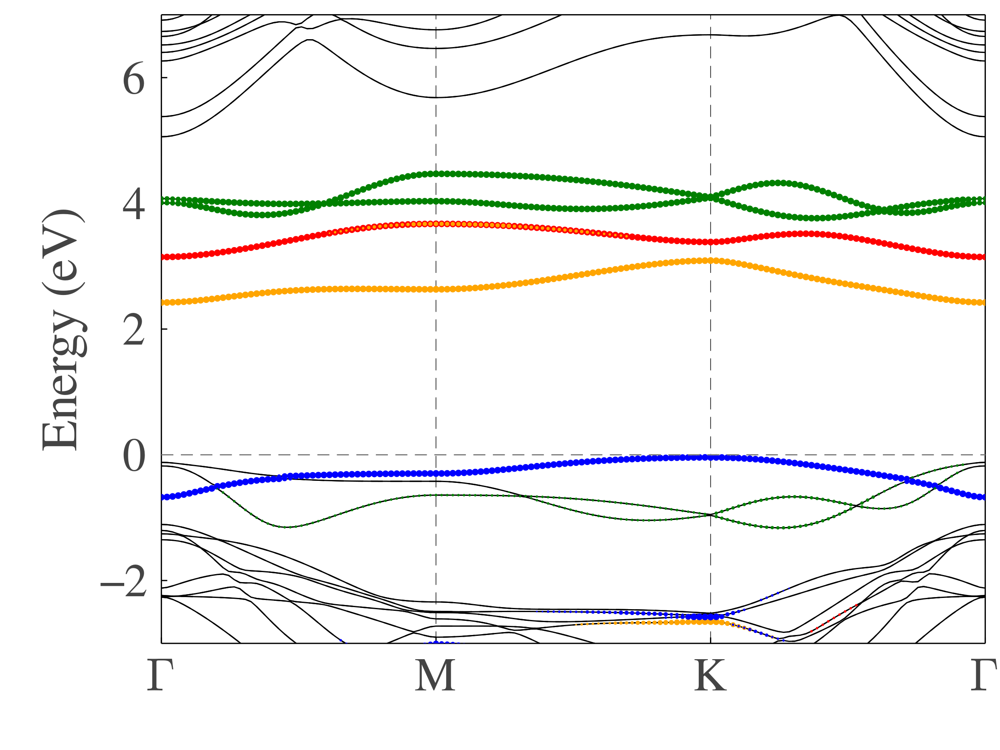

Band Structure
We have defined Plots recipe for band structure, which means the band structure can be visualized by Plots.jl.
For example, using metadata of bands, kpoints and projection from projected wave function character , which is a GGA+U+Spin calculation, we can plot projected band structure for $e_g^\sigma$, $e_g^\pi$ and $a_{1g}$ orbits.
using MatterEnv
using Plots
using LaTeXStrings
fermi_energy = -3.0491 # Fermi energy of the system
critical_points = ["Γ", "M", "K", "Γ"] # Critical points of chosen k points
tolerance = 0.15 # minimum value of projection character value to be plotted
magnify = 7.0 # marker_size = magnify * projection_character
max_size = 3.0 # maximum value of marker size
shift_energy!(bands, -fermi_energy) # set the Fermi energy to be 0
# some basic setting for the figure
plot(
dpi = 100,
size = (800, 600),
framestyle = :box,
fontfamily = "Times New Roman",
ylabel = "Energy (eV)",
guidefontsize = 25,
ylim = (-3.0, 7.0),
legend = false,
grid = :x,
gridstyle = :dash,
gridalpha = 1,
tick_direction = :in,
yticks = -2:2:6,
yminorticks = false,
tickfontsize = 23,
bottom_margin = 1.4Plots.cm,
left_margin = 1.9Plots.cm,
)
# plot all bands. black solid for spin up and gray dash line for spin down
plot!(bands, kpoints; critical_points = critical_points, colorlist = [:black, :gray], stylelist = [:solid, :dash])
# plot projected band structure
plot!(projection, kpoints, bands; ion=1, orbit=7, markeralpha =1, markerstrokecolor=:red, markercolor=:red, tolerance=tolerance, max_size=max_size, magnify=magnify)
plot!(projection, kpoints, bands; ion=1, orbit=6, markeralpha =1, markerstrokecolor=:blue, markercolor=:blue, tolerance=tolerance, max_size=max_size, magnify=magnify)
plot!(projection, kpoints, bands; ion=1, orbit=9, markeralpha =1, markerstrokecolor=:blue, markercolor=:blue, tolerance=tolerance, max_size=max_size, magnify=magnify)
plot!(projection, kpoints, bands; ion=1, orbit=5, markeralpha =1, markerstrokecolor=:green, markercolor=:green, tolerance=tolerance, max_size=max_size, magnify=magnify)
plot!(projection, kpoints, bands; ion=1, orbit=8, markeralpha =1, markerstrokecolor=:green, markercolor=:green, tolerance=tolerance, max_size=max_size, magnify=magnify)
# grid line
plot!([0, length(kpoints)], [0, 0], linecolor = :gray, linestyle = :dash, label=nothing)
savefig("band.png")
The output figure is plotted as
